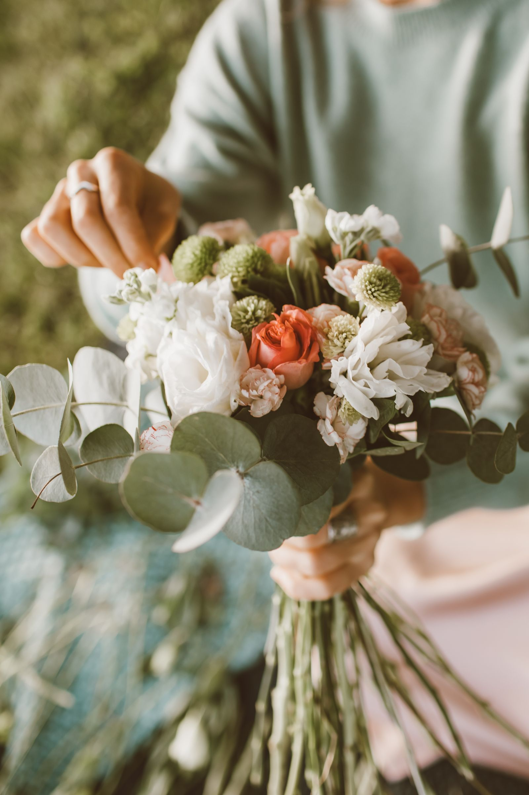

СЕЗОН
2026 / 11
2026 / 11
ВИТРИНА / БУКЕТЫ ЭТОЙ НЕДЕЛИ
Цветы
в городе.
Восемь сезонных букетов. Собираем в мастерской утром и доставляем по Москве на следующий день.

ЦВЕТЫ В РАБОТЕ / МАСТЕРСКАЯ
Наши цветы
Букеты на
любой повод.
Каждый букет мы собираем утром в день доставки. Палитра остаётся верной, а цветы могут немного отличаться — сезон всегда вносит своё.
Таких букетов пока нет. Попробуйте другое название или категорию.
Цветы — самый красивый способ
сказать «я подумал о тебе».

Каждый стебель
на своём месте
на своём месте
Всё просто
От нашей
мастерской —
к вам.
- Вы выбираете.Покажем состав и настроение каждого букета.
- Мы собираем.Утром в день доставки выбираем свежие цветы.
- Курьер привозит.Бережно, в воде и с открыткой от вас.
Ваш заказ
Подарить
цветы.
Добавьте букет в корзину, выберите день и сохраните детали заказа.
Букеты0 ₽
Доставка—
Итого0 ₽
Про мастерскую
Немного странные.
Очень живые.
Мы верим в цветы без строгих правил. В букетах Пыльцы садовая нежность встречается с дерзкими оттенками, а привычный повод становится личным. Собираем небольшими партиями и выбираем сезонные цветы.
ПЫЛЬЦА
ЦВЕТЫ ДЛЯ ЖИЗНИ
ЦВЕТЫ ДЛЯ ЖИЗНИ